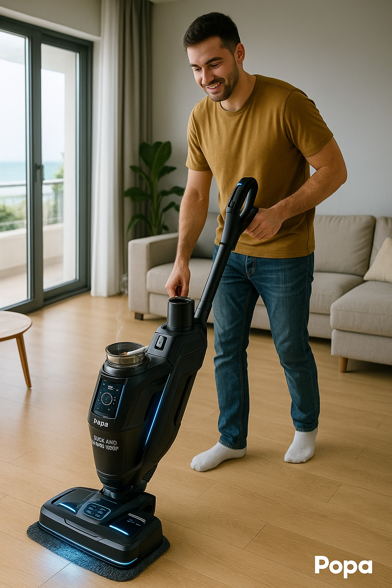
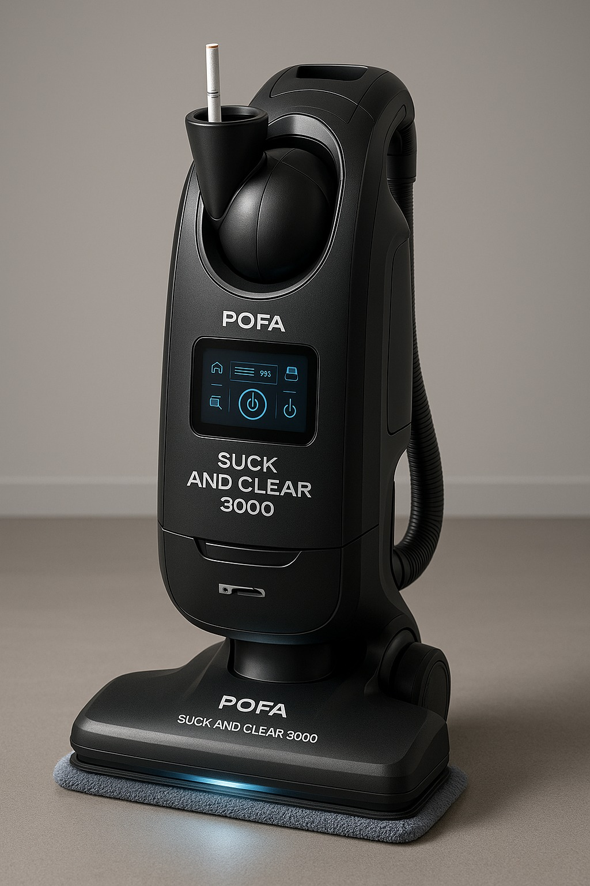

Chi Siamo
Siamo una giovane realtà nata dalla passione per la tecnologia e l’innovazione al servizio della casa.
La nostra missione è offrire elettrodomestici affidabili, moderni e accessibili, pensati per semplificare la vita quotidiana e migliorare il comfort domestico.
Anche se siamo all’inizio del nostro percorso, crediamo che qualità, attenzione al cliente e sostenibilità siano i pilastri su cui costruire un futuro solido.
Ogni prodotto che selezioniamo risponde a criteri rigorosi di efficienza, durata e design, con un occhio di riguardo all’ambiente e al risparmio energetico.
Ci distinguiamo per un servizio clienti diretto e umano, pronto ad ascoltare, consigliare e supportare in ogni fase dell'acquisto e oltre.
Siamo pronti a crescere con voi, portando nelle vostre case soluzioni intelligenti e convenienti, perché crediamo che la tecnologia migliore sia quella che migliora la vita, ogni giorno.


Dati Aziendali
- Nome: Clean with Popa srl (Hanlet Dioni Manon Polanco)
- Settore: Elettrodomestici - Aspirapolveri - Popa
- Sede: Via Pola, 00071, Torvaianica 🔪 RM
Mission
Offrire aspirapolveri innovativi, eco-sostenibili e ad alta efficienza per il mercato domestico e professionale.
Obiettivi a 3 anni
- Lanciare 3 modelli di aspirapolveri
- Ottenere una quota di mercato del 5% nel segmento premium italiano
- Espandersi in 2 mercati europei
Target di riferimento
- Famiglie (aspirapolveri silenziosi, leggeri, smart)
- Piccole imprese e uffici (modelli professionali)
- Consumatori eco-consapevoli
Trend di settore
- Crescita della domotica e degli elettrodomestici smart
- Aumento della domanda di prodotti sostenibili
- Adozione di tecnologie senza fili e con sensori
Competitor principali
- Dyson (premium)
- Rowenta / Bosch (mid-range)
- Xiaomi / Hoover (smart economy)
- Folletto (verde)
Strategia di Marketing
- Prezzo:
- PopaGoSlim: €149
- CleanPopa3000: €399
- Suck&Clean: €599
- Distribuzione: E-commerce proprietario, Amazon, eBay, Subito, Vinted, MediaWorld, Unieuro, Euronics
- Promozione: Campagne Google Ads e Social (Instagram, TikTok), Influencer nel settore pulizia/casa
Struttura Organizzativa
- CEO: Direzione strategica e relazioni con investitori
- CTO: Ricerca, sviluppo e innovazione
- CMO: Marketing e branding
- Responsabile vendite: Canali distributivi e partnership
- CFO: Gestione finanziaria e pianificazione